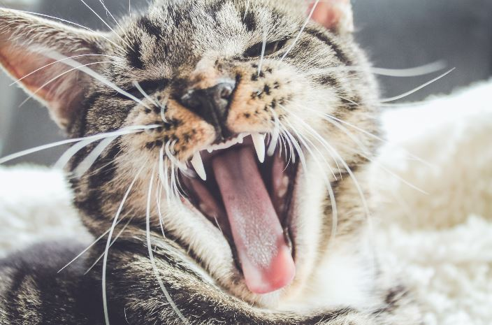

Cat Hissing: All You Need to Know | 14 Reasons
Why do cats hiss?
Cats hiss for various reasons, most often as a warning. The sound is similar to what we would call "sad sounds" in cats. Though it can be hard for us to pinpoint exactly the emotion that our cat is trying to communicate, with hissing we have more of an idea: he may be scared or angry and wants you to back off.
Cats do rely heavily on body language and actions when they interact with each other (and when they interact with humans). Pay close attention to your kitty's tail position and ears along with the sound, a combination of these things can help you decipher why your cat might be upset or irritated by another person or animal in its presence.
In general, cats will hiss at others out of fear and aggression. While a hiss may sound harmless, it's actually quite an intense act, your cat is baring its teeth, leaving itself open to attack if needed.
The best way to handle the situation when your cat hisses at you? Calmly back away or leave the room (depending on which kind of hiss it is) while keeping your voice soft and your movements slow. If your cat walks right up to you and begins to rub against you, however, this likely means that she wants attention, not necessarily a sign of aggression or annoyance as before.
Here is a list of reasons why cats hiss with details:- They have newborn kittens
- A dog is in sight or nearby
- Your cat might be in pain
- Your cat wants attention or affection
- Your cat might be stressed
- They might be scared
- They might be sick
- What does your cat sound like?
- Because of previous abuse
- Immunization shots
- Rough Playtime
- Stranger Close By
- Mating Season
Cats will hiss if they have a litter of kittens and are protecting them. Don't worry, your cat won't hurt her own kittens (unless they're sick or in danger). They may even try to lead you away from the nest so that you don't accidentally step on or near the babies.
When female cats go into heat, the act of breeding causes their body chemistry to go a bit haywire, which causes them to emit loud yowls and hisses whenever they feel threatened. That's why it's also essential to always make eye contact with them before reaching out to pet them, especially female cats. If you avoid eye contact when they hiss because it's frightening, that will only encourage her to continue the hissing more often. Also, try to speak in gentle tones and refrain from making any quick movements while interacting with a cat who is hissing at you.
Cats also hiss when they see another animal, like a dog, because it warns the other creature that she's being protective and not to come closer. This is called their "intimidation growl." While it might look like an aggressive hiss (because of their fur standing up and baring their teeth), it isn't actually as threatening as all that, your cat is just trying to get rid of something she might consider a threat.
If your cat is in pain , she might hiss at you in warning. Unlike the normal course of a hiss, which is for an intruder to get away from her and back off, this hiss tells you that something's wrong as well.
Cats love it when their humans shower them with attention, and they'll sometimes try to get us to do so by making cute little noises until we pay attention to them. If there's nothing going on, your cat might be letting out a small "mew" sound while looking up at you. Of course, if there actually is something going on, like another animal or person coming around, then that sound will have a different tone to it.
Your cat might hiss if they are stressed. This is a good way to get someone's attention, as many people will assume that if your cat is hissing, there must be danger. More often than not, though, cats are stressed when they are hungry, need to use the litter box or want some playtime.
When cats are scared, they may hiss. If there is a strange animal or human in the vicinity, it's only natural for your cat to be scared, too. Hissing will tell that person (or animal) to back off and leave. Your cat might also hiss if they see a reflection of themselves in the mirror – you won't usually hear this one unless you have the TV on.
An unhealthy cat could also be stressed out with illness, so this can affect their behavior, including how much they are willing to talk when they don't feel well. A sick cat will probably hide most of the time, as this is natural for them, but if you find your kitty hissing at you from under your bed, it's time to take them to see the vet. It could also be a behavioral issue The most common cause of hissing in cats is because they are being defensive; protecting themselves from real or imagined threats. Cats will always try and protect what is theirs, but this can change depending on how much you spend time with your pet.
This can sometimes lead into something called redirected aggression.
What Is Redirected aggression?
Redirected aggression is aggression in which a cat attacks one thing or person as a substitute for another. For example, if you were to come home and catch your cat raiding the trash can, the animal could be demonstrating redirected aggression toward its owner. When this happens, the animal is not displaying anger; it has effectively transferred its perceived negative feelings about something else onto someone (or something) else.
Not all cats hiss in the same way. Some let out one loud hiss while others have shorter little "mehs" that come across as almost kitten-like. If you have two different types of cats, it can help to know the difference between the sounds so you know who is making them—are they both getting along?, are they fighting over something or playing together?, etc. It can also help you tell how your cats are feeling.
Cats will hiss if they are not comfortable with you touching them. If a cat has been abused by an owner or other animal they will often times lash out in any way that they can. As far as how do I get my cat to stop hissing at me, all you have to do is give him a little time and space so he/she feels safer and try petting her only when she is calm for about 10 minutes. They usually warm up after a while of being around people or another animal.
Whenever a kitten goes through painful immunization shots or vaccinations , he/she may start exhibiting signs of aggression like growling, biting and hissing. This can serve as an indication of fear for your pet which explains why kittens would feel inclined to lash out in any way that they can after such experiences when in reality they are just seeking comfort. By giving him a bit more time and space so he trusts you in time, you will be able to notice the change of attitude and hopefully begin enjoying your pet instead of being afraid of him.
During playtime, cats may start hissing or growling when they are being chased or playing too roughly with their siblings. This displays dominance over the cat who is chasing them or has hurt them during the game, as a way to let the other kitty know that he/she did something wrong without actually injuring him/her physically.
Most indoor cats will hiss at strangers because they’re not used to being around people and therefore, see them as possible threats or intruders. Many times this means that the cat is cautious of you and only wants to give you a warning before he/she attacks so it would be best to back away from him/her until he relaxes.
A female cat may also hiss at another cat during mating season as a way to display her aggression towards her opponent. She makes this sound so she can continue and defend her territory from any possible intruders like males who might try to fight with her for mates but usually, the sound is made as a warning.
How To Stop a Cat From Hissing
You can use tactics like rewarding your cat with ‘cat treats’ when she sees you, petting her on the head and rubbing her body or giving her new toys to play with. This will tell your cat that you’re not a threat to be used as prey but rather someone who means her no harm.
If your cat hisses at you when you try to scoop him into your arms like what most cats do when they want to be carried around, reward the meowing sound instead of trying to pick him up. This means applying positive reinforcement to change your kitty’s behavior towards something more favorable for both parties.
Which cat is the culprit?
There are several types of hisses, including defensive, predatory and social hisses. A defense hiss is usually accompanied by a direct stare down or sideways glance, sometimes accompanied with raised fur on the back. This type of hissing will always be slower than a predatory hiss. A predatory hiss is quicker and more aggressive than a defensive one because it is made when a cat sees prey and wants to get closer for capture. It also occurs when your cat chases something that runs away from him, such as another animal or toy that he's playing with. When you hear this kind of hissing it's wise to startle your cat with some movement so he realizes you are present.
What to do about a hissing cat?
If you have a hissing cat, you may want to give him some space. But if your cat is defensive and won't retreat, then you'll need to trigger a predatory response in order to get him to back off.
An easy way to do this is by throwing a ping pong ball on the floor (wearing safety glasses just in case!). A quick burst of movement will startle your cat into thinking he has an opportunity for lunch or play, a sensation that quickly distracts him from his original reason for hissing. This takes advantage of the fact that cats respond more strongly to moving objects than stationary ones. If your cat isn't distracted by the ping pong ball, try another tactic: cover one eye with your hand and watch your cat carefully as you walk towards him. Hiss!
It is likely that he will not even notice your approach because cats have such a keen peripheral vision, and this can really irritate them and make it difficult for them to concentrate on anything other than the irritation in their line of sight. Another tactic is to hold out your dirty laundry towards him while saying "Me-ow" as loud as you can. Your cat will be sure that there is an intruder in his domain, someone who's threatening his food or territory. It's also important when dealing with a hissing cat to never look directly at him because eye contact is interpreted by many cats as a challenge (conversely, human babies cannot make eye contact until they are about 6 months old).
Signs that there is more to your cat hissing
There are some things that will indicate something serious about your cat hissing.
Low Energy
If your cat has low energy, he may just be going through a kitty midlife crisis. However, it’s also possible that the cat is frightened by an intruder or other unfamiliar animal. If the hissing begins after a move to a new home or changes in routine, and your cat has low energy levels, then take him to the vet for proper diagnosis.
Kittens usually need warmth, so if it's cold outside and you see your adult cats huddling together for warmth and sleeping close to each other on top of one another when they're normally solitary creatures that like being alone there's something wrong with them! They should not be hissing at each other outdoors unless they have been fighting over food or territory.
Poor Appetite
Kittens have poor appetites due to fear or stress. If your kitten has a good appetite for wet food but not dry food, diarrhea, throwing up yellow or greenish bile and won't drink water then take him to the vet immediately!
If you're waking up in the morning and there is one cat huddled on top of another cat's dead body that you thought was sleeping peacefully, who knows what they could have eaten?
They could have been poisoned by ingested toxic plants such as lily of the valley, wisteria , begonia leaves, azaleas, philodendron leaves.
Conclusion
You just learned all you need to know about why cats hiss. When a cat Hisses, they are telling others that there is an issue or problem in the environment. They may also be making themselves look bigger and more intimidating to ward off potential threats like humans, dogs, or other animals. Cats can even use their voice as a form of defense if they feel threatened enough by another animal (or human).
If a cat has just been startled by the sound of an animal outside and it's making unfamiliar noises that might be threatening them (like a dog barking), then you will likely hear them hiss as well. In this case, if the owner doesn't intervene quickly enough to calm down the pet with soothing words or stroking/petting, it may even lash out at its human companion. So what can we learn from this? Never provoke your cats into anger because they have sharp teeth and claws which makes them much more dangerous than dogs would be in these circumstances!